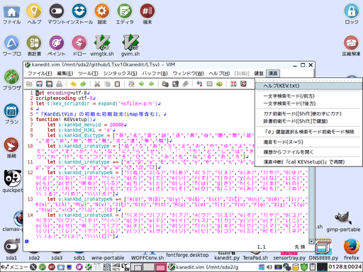

「KEV」はVimスクリプトでできてる漢字直接入力です。
version(branch):20170114S031328 modify:20170115U110751
目次
⓪-1．インストール(ダウンロード・アンインストール)＆セットアップ
※Pythonは別途インストールされているものとします(Pythonの導入分からない人は「") ⑩-0．「L:Tsv」のＦＡＱ」も参考)。
⑩-0．「L:Tsv」のＦＡＱ」も参考)。
ダウンロードは「https://github.com/ooblog/LTsv10kanedit」にある「Clone or download」ボタンを押すと出る「Download ZIP」メニューをクリック。
インストールは任意(なるだけユーザーディレクトリ内)のフォルダに「LTsv10kanedit-master.zip」を解凍するだけです(「LTsv10kanedit-master」フォルダが作成されるはずです)。
「*.py」のパーミッションがOFFになってたら実行可能に変更、Wineで使う場合は「wine_sh」フォルダ内の「*.sh」のWineパスを適宜修正。
最初に「kanmap.py」を起動(前バージョンの「LTsv/kanpickle.bin」ある場合は一旦削除してから)。「LTsv/kanpickle.bin」を新規作成してください。
「LTsv/kanpickle.bin」を初期化しない場合グリフ座標データが蓄積するまで起動や動作が重くなるか、バージョン(ブランチ)によってはエラーになる場合があります。
詳細は「 ①-0．「kanmap」の使い方(初回起動・表示編)」を参考。
①-0．「kanmap」の使い方(初回起動・表示編)」を参考。
フォント「kan5x5comic.ttf」も用意する場合は「 ③-0．「kanfont」のＦＡＱ」を参考。
③-0．「kanfont」のＦＡＱ」を参考。
- ooblog/LTsv10kanedit: 「L:Tsv」の読み書きを中心としたモジュール群と漢字入力「kanedit」のPythonによる実装です(準備中)。
- https://github.com/ooblog/LTsv10kanedit
アンインストールはインストール時に作成した「LTsv10kanedit-master」フォルダを削除するだけです。
⓪-2．その他現在わかっている不具合や今後の課題
Python 2.7.6(Tahrpup6.0.5)およびPython3.4.4(Wine1.7.18)で開発しています。Windows,cygwin,darwinなどでの動作は確認しておりません。
フォント(グリフ)「kan5x5comic」は半角と全角の幅の比率が約5:3(1024:624)なのでアスキーアートで問題になる場合があります。グリフ不足で表示できない文字などあります。
「kan5x5comic.ttf」と「kan5x5.ttf」を同時に入れると麻雀牌が表示されない(「kan5x5.ttf」の絵文字代替4x5文字が優先される)場合があります。
私用領域と呼ばれる環境に左右される文字コードを漢直鍵盤の制御に用いてます。「kan5x5comic.ttf」を用意しないとソースが見辛い可能性があります。
人名に使える漢字の異体字を漢字配列「LTsv/kanmap.tsv」から単漢字辞書「LTsv/kanchar.tsv」に移管作業中。なので漢直鍵盤の漢字配列「LTsv/kanmap.tsv」が大幅に変更するかも。
マウスボタンの取得は保留。ホイールの取得は放置。tkk方面は手を出さない予定(コンボボックスなどはGTKのみサポート)。
GTKのコールバックから受けとる構造体を扱う方法が不明のため、GUIイベント経由のPCキーボード取得やファイルダイアログからのキャンセル取得などが不明。
「docs/」フォルダ内のドキュメントを「docs/kanedit_etc.tsv」ベースで描き直し中。執筆途中状態の関数一覧タグ解説項目あり。
「LTsv/LTsv_doc.py」でタグの順序が厳格という問題があるのでいっその事スクリプト言語ごと新規に作ろうと思います(TSFの開発)。
LTsv版の「kanedit.py」の開発を凍結してTSF版の「kanedit」を作成する予定です。言語の開発には時間が必要なので、平行してVim版「LTsv/kanedit.vim」も開発です。
「LTsv/kanedit.vim」と「kanedit.py」とで操作方法が乖離してますがTSF版もVim版の方向になるべく揃える予定です。LTsv版は互換性の維持程度に止まると思います。
- プログラミング言語「TSF_Tab-Separated-Forth」開発予定。
- https://github.com/ooblog/TSF1KEV
①-0．「KEV(kanedit.vim)」をVimへセットアップ

「.vimrc」ファイルに起動コマンド「:KEVtsf」を設置する方法で解説します。
「LTsv/kanmap.tsv」と「LTsv/kanchar.tsv」を「LTsv/kanedit.vim」と同じフォルダに入れて置きます。
Vimのメニューから「編集」→「起動時の設定」で「.vimrc」ファイルが開きます(作成できます)。
「command KEVtsf :source (KEVインストール先フォルダ)/kanedit.vim」のような一行を加え保存(Vimのメニューから「ファイル」→「保存」)します。
Vim再起動すると「:KEVtsf」コマンドが入力できるようになるはずです([Esc]を何回か連打してから、[:]を押すとコマンドモードに移行)。
「:KEVtsf」コマンドで「1(ぬ)」「鍵盤」のメニューが追加されてたらセットアップ完了です(Vimを起動するたび「:KEVtsf」コマンド実行)。
[Space]キー2回でモード切替、[Shift]キー押しながら[Space]キー2回で半角スペース入力になります。
Vim自体の使い方は日本語ドキュメント等で確認してください(英語版はVimのメニューから「ヘルプ」→「概略」「ユーザーマニュアル」「How-toリンク」のいずれか)。
- help - Vim日本語ドキュメント
- http://vim-jp.org/vimdoc-ja/
①-1．「KEV」の[Shift]省略した使い方
Vimのマップ機能を用いて漢直を実装しています。マップ等の設定変更は[Space]キーから始まるコマンド入力を使います。
-
[1(ぬ)〜\(ろ)]
-
通常ひらがな鍵盤の文字入力、もしくは1文字検索。後述の鍵盤切替コマンドでカタカナ入力も可能。
-
[Space],[Space]
-
ノーマルモードと挿入モードを切り替えます。通常は[i(に)]で挿入モード移行、[Esc]か[Ctrl]+[[(゜)]でノーマルモード移行。
-
[Space]…
-
[Space]キー入力後のコマンド入力が遅れると普通に半角スペースが入力されます。
-
[Space],[1(ぬ)〜\(ろ)]
-
入力鍵盤を切り替え、もしくは字引入力辞書の変更をします。同じ鍵盤を2回選択するとひらがなカタカナの入れ替えです。
-
[Space],[Enter]
-
「/前方1文字検索」モードです。漢直検索できます。解除は再度[Space],[Enter]。
-
[Space],[Tab]
-
「?後方1文字検索」モードです。漢直検索できます。解除は再度[Space],[Tab]。
-
[Space],[Del]
-
「σ」鍵盤に切り替えます。1文字検索モード、辞書メニュー、字引入力、カタカナ鍵盤も解除されます。
-
「σ」鍵盤で [h(く)][j(ま)][k(の)][l(り)]
-
hjklカーソル移動です。移動後即座に挿入モードに戻るので、挿入モードでカーソル移動してる錯覚を味わえます。
-
「σ」鍵盤で [;(れ)]
-
[BS]入力というかカーソルの左が1文字消去されます。
-
「σ」鍵盤で [:(け)]
-
[Del]入力というかカーソルの右が1文字消去されます。
-
「σ」鍵盤で [](む)]
-
[Enter]入力というか改行が入力されます。
-
「σ」鍵盤で [,(ね)]
-
[Home]入力というか行頭にカーソル移動です。
-
「σ」鍵盤で [.(る)]
-
[End]入力というか行末にカーソル移動です。
-
「σ」鍵盤で [/(め)]
-
[PageUp]入力というか1画面文頭にスクロールです。
-
「σ」鍵盤で [\(ろ)]
-
[PageDown]入力というか1画面文末にスクロールです。
-
「σ」鍵盤で [a(ち)]
-
テキスト全選択です。
-
「σ」鍵盤で [z(つ)]
-
一手前に戻します。
-
「σ」鍵盤で [o(ら)]
-
ファイル履歴などからファイルを開きます。マウスが使えるかのようなメッセージがでますが、番号がズレる場合があり危険なので数値入力してください。
-
「σ」鍵盤で [s(て)]
-
ファイルを保存します。
-
[Space],[BS]
-
「鍵盤」と「辞書」を入れ替え。ひらがなカタカナの入れ替えではなく[1(ぬ)〜\(ろ)]と[q(英)〜,(照)]などとの交換です。辞書の解除は再度同じ辞書の選択。
①-2．「KEV」の[Shift]併用する使い方
[Shift]キーを併用する事で入れ替え動作をショートカットすることができます。
-
[Shift]+[Space],[Shift]+[Space]
-
[Shift]キー押しながら[Space]キー2回で半角スペースを入力します。
-
[Shift]+[Space],[Space]
-
[Shift]キー押しながら[Space]キー2回の時[Shift]キーを押さない[Space]を混ぜると全角スペースも入力できます。
-
[Space],[Shift]+[Space]
-
[Shift]キー押しながら[Space]キー2回の時[Shift]キーを押さない[Space]を混ぜると全角スペースも入力できます。
-
[Shift]+[1(ヌ)〜\(ロ)]
-
[Shift]キーを組み合わせる事で先述の鍵盤切替コマンドをショートカットしてカタカナ入力することも可能です。
-
[Shift]+[Space],[Shift]+[1(ヌ)〜\(ロ)]
-
[Shift]キーを組み合わせる事で先述の「鍵盤」と「辞書」の入れ替えコマンドをショートカットして辞書の選択解除も可能です。
③-0．「KEV」のＦＡＱ
-
Ｑ．汎用辞書「kanword.tsv」が認識されない。
-
Ａ．Vin版では汎用辞書「kanword.tsv」は未サポートです。汎用辞書は漢直の対象外だからです。
-
Ｑ．郵便番号辞書「kanzip.tsv」が認識されない。
-
Ａ．Vin版では郵便番号辞書「kanzip.tsv」は未サポートです。郵便番号は漢直の対象外だからです。